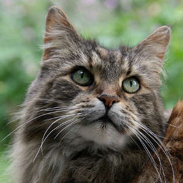

Le chat domestique est la sous-espèce issue de la domestication du chat sauvage, mammifère carnivore de la famille des félidés. C'est l’un des principaux animaux de compagnie et on compte aujourd’hui une cinquantaine
de races différentes reconnues par les instances de certification.
Le chat Maine Coon

Le géant, le plus grand, le chef : dans le monde félin, le chat Maine Coon est le chat le plus imposant qui soit. Il peut atteindre tranquillement, sans être obèse, 14 kg et, malgré son aspect impressionnant, il donne une rassurante
impression de grande confiance.
Autonome parce qu’en mesure de prendre soin de lui-même dans n’importe quelle circonstance, c’est donc un grand chasseur, en réalité un bon mélange de douceur et de sauvagerie ; c’est un chat « de travail », justement à cause de cet instinct prédateur
bien développé ; cela en fait un chat de campagne idéal ; avec lui, les greniers et les granges sont parfaitement en sécurité.
Mais tout en étant très dynamique et aimant la vie en plein air – il aime même l’eau – il s’adapte aux personnes dotées d’un caractère équilibré, qui ne dépassent jamais les bornes en envahissant son espace vital car elles respectent son instinct
de liberté, auquel elles n’opposent pas de limites trop sévères.
Le chat Sacré de Birmanie

Chat à la personnalité assez complexe et indéchiffrable, le chat birman ou sacré de Birmanie, peut-être pour confirmer encore plus son côté imprévisible, instaure avec son maître un très beau rapport basé sur l’amour et la fidélité.
Son aspect raffiné et précieux, son caractère mystérieux qui n’a rien de « sauvage » en font un chat si particulier qu’il mérite bien son nom de Chat sacré de Birmanie.
Originaire de Birmanie, ce chat aurait été un animal sacré qui ne pouvait sortir des temples ; malgré cette règle protectrice rigide, aux alentours des années vingt, le milliardaire américain Vanderbilt aurait réussi à obtenir, peut-être en corrompant
l’un des serviteurs du temple, un mâle et une femelle.
Selon une autre tradition, ce chat serait issu d’un Siamois et d’un Persan. Dès les années vingt, les premiers Birmans, établis en France, se reproduisirent et prospérèrent. Comme tant d’autres races, le chat birman frôla l’extinction à
cause de la Seconde Guerre mondiale : un couple en réchappa à partir duquel on reconstitua la race.